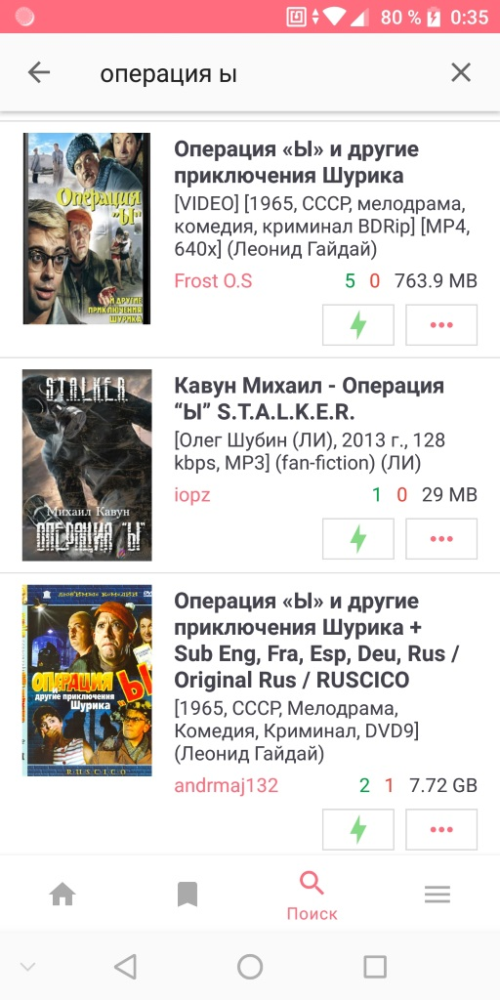

Что умеет Торба?
Torba - это клиент для сайта Rutracker.Org на Android, который позволяет быстро просмотреть обновления интересующих вас разделов форума.
С ним вы не пропустите появление горячих киноновинок или моднейших компьютерных игр, потому что приложение всегда под рукой!
По вопросам и предложениям можете писать в комменты или на почту torba4me@gmail.com
Скачать APK17.6 mb
